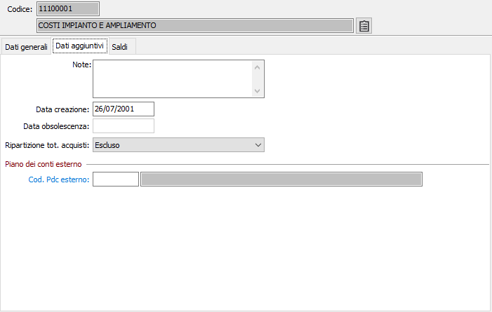

Dati aggiuntivi

NOTE: campo note su più righe per inserire eventuali annotazioni in merito all’utilizzazione del sottoconto.
DATA CREAZIONE: indica la data in cui il sottoconto è stato caricato. Al momento del caricamento di un nuovo record in questo campo viene proposta la data di sistema.
DATA OBSOLESCENZA: indica la data in cui il sottoconto è stato dichiarato obsoleto.
RIPARTIZIONE TOT. ACQUISTI: Definisce come ripartire i sottoconti per il totale degli acquisti da dichiarare nel modello Iva. I valori possibili sono:
Beni ammortizzabili
Beni strumentali non ammortizzabili
Beni destinati alla rivendita ovvero alla produzione di beni e servizi
Altri acquisti
Escluso
Se la ditta utilizza un collegamento ad un piano dei conti esterno sarà presente anche il codice del piano dei conti esterno specifico da associare al conto per poi poter estrarre le informazioni secondo lo schema di riclassificazione.
CODICE PDC BILANCIO ESTERNO: codice che individua il conto del piano dei conti esterno da associare al conto. Sul campo sono attive le funzioni di ricerca (F9) e manutenzione (CTRL+W) sulla tabella stessa.